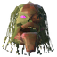
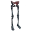
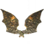

Trophäen
Trophäen in Valheim – 67 Gegenstände mit Biom, Fundort, benötigtem Werkzeug, Rezept und Verwendung.
Kein Gegenstand gefunden.
 Aasbären-Trophäe
Aasbären-Trophäe
Das Starren ist fort …
Herkunft
- Beute von: Aasbär · Ebenen · 10 % Chance
Verwendung
- Zutat für: Aasknochen-Antlitz
 Asksvin-Trophäe
Asksvin-Trophäe
Man sollte sich nicht von dem freundlichen Lächeln täuschen lassen, denn es könnte einem locker den Arm abbeißen.
Herkunft
- Beute von: Asksvin · Aschenlande · 10 % Chance
Verwendung
- Baumaterial für: Federkranz
Augenloser-Trophäe
Von diesen Klauen zerfetzt zu werden, ist bestimmt schmerzhaft.
Herkunft
- Beute von: Augenloser · Hoher Norden · 10 % Chance
 Bären-Trophäe
Bären-Trophäe
Der Blick ist nach wie vor furchterregend …
Herkunft
- Beute von: Bär · Düsterwald · 10 % Chance
Verwendung
- Zutat für: Bronzeanhänger, Kopfschmuck des Bären
- Baumaterial für: Bärenfellteppich
 Barka-Trophäe
Barka-Trophäe
Der gefrorene Kopf eines einst lebendigen Baums.
Herkunft
- Beute von: Barka · Hoher Norden · 10 % Chance
 Brei-Trophäe
Brei-Trophäe
Die verdauten und mittlerweile geleeartigen Überreste unglücklicher Abenteurer.
Herkunft
- Beute von: Formloser Brei · Hoher Norden · 10 % Chance
Verwendung
- Zutat für: Klumpenbombe: Brei
 Brenna-Trophäe
Brenna-Trophäe
Brennt aus irgendeinem Grund immer noch.
Herkunft
- Beute von: Brenna · Düsterwald
 Der Uralte-Trophäe
Der Uralte-Trophäe
Dieser abgetrennte Kopf verströmt eine große Macht. Bringe diesen Gegenstand bei den Opfersteinen als Opfer dar.
Herkunft
- Beute von: Der Uralte · Düsterwald
 Drachen-Trophäe
Drachen-Trophäe
Fühlt sich immer noch kalt an.
Herkunft
- Beute von: Drache · Gebirge · 10 % Chance
Verwendung
- Zutat für: Drachenhelm, Frostiger Angelköder, Klumpenbombe: Frost
 Draugr-Trophäe
Draugr-Trophäe
Stopfe den Mund, falls er in der Nacht zu flüstern beginnt...
Herkunft
- Beute von: Draugr · Grasland, Sumpfland · 10 % Chance
 Dvergr-Trophäe
Dvergr-Trophäe
Es ist, ehrlich gesagt, besorgniserregend, dass du dir das an die Wand hängen würdest …
Herkunft
- Beute von: Dvergr-Magier · Nebellande · 5 % Chance
- Beute von: Dvergr-Schurke · Nebellande, Aschenlande · 5 % Chance
- Beute von: Eingesperrter Dvergr · Hoher Norden · 5 % Chance
 Eikthyr-Trophäe
Eikthyr-Trophäe
Dieser abgetrennte Kopf verströmt eine große Macht. Bringe diesen Gegenstand bei den Opfersteinen als Opfer dar.
Herkunft
- Beute von: Eikthyr · Grasland
 Elaking-Trophäe
Elaking-Trophäe
Gemeine kleine Augen starren dich an.
Herkunft
- Beute von: Elaking · Grasland, Düsterwald, Sumpfland, Gebirge, Ebenen, Nebellande, Aschenlande, Hoher Norden, Ozean · 10 % Chance
 Elch-Trophäe
Elch-Trophäe
Der mächtige Herrscher der nördlichen Wälder.
Herkunft
- Beute von: Elch · Hoher Norden · 10 % Chance
Verwendung
- Zutat für: Geisterrufer, Guss: Geisterrufer, Guss: Kopfschmuck des Rufers, Halsstecher, Kopfschmuck des Rufers
- Baumaterial für: Geweihthron

Elite Draugr-TrophäeDer tote Blick dieser leuchtenden roten Augen lässt dir das Blut in den Adern gefrieren.
Herkunft
- Beute von: Elite Draugr · Grasland, Sumpfland · 10 % Chance
- Zerschlagen: Dorf des Nordens · 5,3 % Chance
Verwendung
- Zutat für: Eisenhammer
 Fader-Trophäe
Fader-Trophäe
Der grüne Drache, unrettbar verdorben. Die Opfersteine sollen ihn bekommen.
Herkunft
- Beute von: Fader · Aschenlande
 Fenring-Trophäe
Fenring-Trophäe
Halb Mensch, halb Wolf steht diesem Gesicht noch immer das letzte Todesfauchen ins Gesicht geschrieben.
Herkunft
- Beute von: Fenring · Gebirge · 10 % Chance
Verwendung
- Zutat für: Kalter Angelköder, Wolfsblick
 Fuling Berserker-Trophäe
Fuling Berserker-Trophäe
Dieser große grauhaarige Kopf ist schwer wie ein Felsen.
Herkunft
- Beute von: Fuling Berserker · Ebenen · 5 % Chance
- Zerschlagen: Dorf des Nordens · 1,1 % Chance
Verwendung
- Zutat für: Schattenschleier
 Fuling Schamanen-Trophäe
Fuling Schamanen-Trophäe
Selbst im Angesicht des Todes hat sich dieser Schamane sein Augurenlächeln erhalten...
Herkunft
- Beute von: Fuling Schamane · Ebenen · 10 % Chance
- Zerschlagen: Dorf des Nordens · 5,3 % Chance
 Fuling-Trophäe
Fuling-Trophäe
Labbrige Falten grüner Haut rahmen ein Paar dunkler, hasserfüllter Augen.
Herkunft
- Beute von: Fuling · Ebenen · 10 % Chance
Verwendung
- Zutat für: Brennender Angelköder
 Gefallene-Walküre-Trophäe
Gefallene-Walküre-Trophäe
Noch im Tod will sie Blut fließen sehen.
Herkunft
- Beute von: Gefallene Walküre · Aschenlande · 5 % Chance
Verwendung
- Zutat für: Jörmundling
 Geirrhafa-Trophäe
Geirrhafa-Trophäe
Sie schenkt dir einen eisigen Blick.
Herkunft
- Beute von: Geirrhafa · Gebirge
 Geister-Trophäe
Geister-Trophäe
Flüstert er immer noch von seinen unerledigten Angelegenheiten?
Herkunft
- Beute von: Geist · Düsterwald · 10 % Chance
 Gjall-Trophäe
Gjall-Trophäe
Hoffentlich treibt sie nicht davon.
Herkunft
- Beute von: Gjall · Nebellande · 30 % Chance
Verwendung
- Zutat für: Pulsierende Ohrringe
 Grauzwergen Berserker-Trophäe
Grauzwergen Berserker-Trophäe
Es benötigte sieben Schläge, um den knorrigen Kopf von seinen Schultern zu trennen.
Herkunft
- Beute von: Grauzwergen Berserker · Düsterwald · 10 % Chance
- Zerschlagen: Dorf des Nordens · 5,3 % Chance
 Grauzwergen Schamanen-Trophäe
Grauzwergen Schamanen-Trophäe
Es kann versuchen sich wieder zum Leben zu erwecken. Schneide jeden neuen Trieb augenblicklich ab...
Herkunft
- Beute von: Grauzwergen Schamane · Düsterwald, Hoher Norden · 10 % Chance
Verwendung
- Zutat für: Herz des Waldes
 Grauzwergen-Trophäe
Grauzwergen-Trophäe
Ein moosbewachsener, abgetrennter Kopf eines Grauzwergs.
Herkunft
- Beute von: Grauzwerg · Grasland, Düsterwald, Hoher Norden · 5 % Chance
- Zerschlagen: Dorf des Nordens · 10 % Chance
 Hasen-Trophäe
Hasen-Trophäe
Es heißt, sie bringen Glück – nur nicht ihren ursprünglichen Besitzern.
Herkunft
- Beute von: Hase · Nebellande · 5 % Chance
 Hexen-Trophäe
Hexen-Trophäe
Vor ihrem Tod glühten ihre Augen vor Magie. Jetzt sind sie finster und leer.
Herkunft
- Beute von: Hexen · Grasland, Düsterwald, Sumpfland, Gebirge, Ebenen, Nebellande, Aschenlande, Hoher Norden, Ozean · 10 % Chance
Verwendung
- Zutat für: Guss: Vergeltung des Nordens, Hexenkrone, Vergeltung des Nordens
 Hexer-Trophäe
Hexer-Trophäe
Ein warmes Leuchten scheint aus dem Inneren zu strahlen. Mit Vorsicht behandeln.
Herkunft
- Beute von: Verkohlter Hexer · Aschenlande · 5 % Chance
 Hirsch-Trophäe
Hirsch-Trophäe
Ein wahres Prachtexemplar, aber du musst mehr als nur Hirsche töten, um nach Walhalla zu kommen.
Herkunft
- Beute von: Hirsch · Grasland, Düsterwald · 50 % Chance
Verwendung
- Zutat für: Hirschbrecher, Odins Met-Horn
- Beschwört den Boss: Eikthyr (2 ×)
 Knochenschlund-Trophäe
Knochenschlund-Trophäe
Ein Schädel aus robustem Knochen, ebenso gefährlich wie schützend.
Herkunft
- Beute von: Knochenschlund · Aschenlande · 33 % Chance
 Knochenwanst-Trophäe
Knochenwanst-Trophäe
Knochen und zähflüssiger Schleim. Wird durch eine nicht sichtbare Kraft zusammengehalten. Bringe diesen Gegenstand bei den Opfersteinen als Opfer dar.
Herkunft
- Beute von: Knochenwanst · Sumpfland
 Königin-Trophäe
Königin-Trophäe
Sie hat genug gesehen.
Herkunft
- Beute von: Die Königin · Nebellande
 Krieger-Trophäe
Krieger-Trophäe
Der Schädel ist von Rissen gezeichnet, als hätte er über die Jahre viele Treffer einstecken müssen.
Herkunft
- Beute von: Verkohlter Krieger · Aschenlande · 5 % Chance
Verwendung
- Zutat für: Heißer Angelköder
- Baumaterial für: Grausten-Truhe
 Krigen-Trophäe
Krigen-Trophäe
Von dem einst mächtigen Krieger ist nur noch eine Hülle übrig.
Herkunft
- Beute von: Krigen · Grasland, Düsterwald, Sumpfland, Gebirge, Ebenen, Nebellande, Aschenlande, Hoher Norden, Ozean · 10 % Chance
 Kultisten-Trophäe
Kultisten-Trophäe
Das Feuer in seinen Augen ist noch immer nicht erloschen.
Herkunft
- Beute von: Kultist · Gebirge · 10 % Chance
Verwendung
- Zutat für: Fenris-Kaputze
 Kvastur
Kvastur
Der beste Freund einer Hexe.
Herkunft
- Beute von: Kvastur · Sumpfland
 Lavaklumpen-Trophäe
Lavaklumpen-Trophäe
Ist wahrscheinlich tot, oder?
Herkunft
- Beute von: Lavaklumpen · Aschenlande · 10 % Chance
 Lox-Trophäe
Lox-Trophäe
Der Kopf einer gigantischen Bestie, die mit dichtem Fell bedeckt ist.
Herkunft
- Beute von: Lox · Ebenen · 10 % Chance
Verwendung
- Zutat für: Eisenhaut, Nebel-Angelköder
 Moder-Trophäe
Moder-Trophäe
Der Kopf eines Drachen, der sogar im Tod majestätisch wirkt. Bringe diesen Gegenstand bei den Opfersteinen als Opfer dar.
Herkunft
- Beute von: Moder · Gebirge
 Monstrosität-Trophäe
Monstrosität-Trophäe
Es war so lange tot, dass es wieder zu leben begann.
Herkunft
- Beute von: Monstrosität · Sumpfland · 50 % Chance
Verwendung
- Zutat für: Klebriger Angelköder
 Morgen-Trophäe
Morgen-Trophäe
Der wandelnde Albtraum hat sein Ende gefunden.
Herkunft
- Beute von: Morgen · Aschenlande · 5 % Chance
Verwendung
- Zutat für: Feuerherz
 Nixen-Trophäe
Nixen-Trophäe
Die perlenartigen Augen und scharfen Klauen täuschen über die angeblich so friedvolle Natur dieser kleinen Nixe hinweg.
Herkunft
- Beute von: Nixe · Grasland · 5 % Chance
 Plagewuchs-Trophäe
Plagewuchs-Trophäe
Eine schwarze und klebrige Masse.
Herkunft
- Beute von: Plagewuchs · Ebenen · 10 % Chance
Verwendung
- Zutat für: Klumpenbombe: Teer
 Ranzige Überreste-Trophäe
Ranzige Überreste-Trophäe
Ein ranziger, verrotteter Schädel. Du bist dir nicht sicher, warum du ihn aufgehoben hast...
Herkunft
- Beute von: Ranzige Überreste · Düsterwald · 10 % Chance
 Robben-Trophäe
Robben-Trophäe
Dieses Tier hat niemanden verletzt und musste doch frühzeitig sterben.
Herkunft
- Beute von: Robbe · Hoher Norden · 10 % Chance

Scharfschützen-TrophäeDiese Beine könnten unendliche Kraft enthalten.
Herkunft
- Beute von: Verkohlter Scharfschütze · Aschenlande · 5 % Chance
 Schleimling-Trophäe
Schleimling-Trophäe
Ein stinkender, klebriger Klumpen.
Herkunft
- Beute von: Schleimmasse · Sumpfland · 10 % Chance
- Beute von: Schleimling · Sumpfland · 10 % Chance
Verwendung
- Zutat für: Klumpenbombe: Elite-Gift, Klumpenbombe: Gift
 Schlundegel-Trophäe
Schlundegel-Trophäe
Die Haut ist zwar schleimig, hat aber ein wundervolles rotes und schwarzes Muster.
Herkunft
- Beute von: Schlundegel · Sumpfland · 10 % Chance
Verwendung
- Zutat für: Eisenbrosche
 Seeschlangen-Trophäe
Seeschlangen-Trophäe
Auch wenn die Schuppen matter aussehen, sind die Augen noch immer von einem Leuchten erfüllt.
Herkunft
- Beute von: Seeschlange · Ozean · 33 % Chance
Verwendung
- Zutat für: Flosse des Schicksals, Stinkender Angelköder
 Skelett-Trophäe
Skelett-Trophäe
Das ausdruckslose Grinsen dieses Schädels erinnert dich an die Unausweichlichkeit des Todes.
Herkunft
- Beute von: Skelett · Grasland, Düsterwald, Sumpfland, Gebirge, Ebenen, Hoher Norden · 10 % Chance
Verwendung
- Zutat für: Knochenturmschild, Totenbeschwörer
- Baumaterial für: Unvergängliche Kerzen
 Steingolem-Trophäe
Steingolem-Trophäe
Diese kristalline Felsformation gäbe sicher eine beeindruckende Bodendekoration ab.
Herkunft
- Beute von: Steingolem · Gebirge · 5 % Chance
Verwendung
- Zutat für: Kristallherz

Sucher-TrophäeNicht so zierlich, wie sie aussehen. Das Leder der Flügel fängt das Licht des Feuers ein, als würden sie sich ans Fliegen erinnern.
Herkunft
- Beute von: Sucher · Nebellande · 5 % Chance
Verwendung
- Zutat für: Durchschlagende Fußfessel
 Suchersoldaten-Trophäe
Suchersoldaten-Trophäe
Der Kopf eines gefallenen Champions.
Herkunft
- Beute von: Suchersoldat · Nebellande · 5 % Chance
- Zerschlagen: Dorf des Nordens · 5,3 % Chance
 Surtling-Trophäe
Surtling-Trophäe
Umspielt von einer bleichen Flamme glimmt es noch immer wie ein Stück Glut.
Herkunft
- Beute von: Surtling · Sumpfland · 5 % Chance
Verwendung
- Zutat für: Fußring
 Thungr-Trophäe
Thungr-Trophäe
Jetzt ist er nicht mehr so hart.
Herkunft
- Beute von: Zil & Thungr · Ebenen
 Todeskito-Trophäe
Todeskito-Trophäe
Obwohl dieses Ding tot ist, würdest du es lieber nicht anfassen.
Herkunft
- Beute von: Todeskito · Ebenen · 5 % Chance
 Troll-Trophäe
Troll-Trophäe
Die ledrige Haut trägt die Überreste uralter Symbole.
Herkunft
- Beute von: Troll · Düsterwald · 50 % Chance
Verwendung
- Zutat für: Moosiger Fischköder, Trollstab
 Ulv-Trophäe
Ulv-Trophäe
Ein rauer Schwanz von einem nicht so braven Jungen.
Herkunft
- Beute von: Ulv · Gebirge · 10 % Chance
 Vulkangeier-Trophäe
Vulkangeier-Trophäe
Sieht aus wie ein Geier, lebt aber in vulkanischem Klima.
Herkunft
- Beute von: Vulkangeier · Aschenlande · 10 % Chance
 Wildschwein-Trophäe
Wildschwein-Trophäe
Dieser Wildschweinkopf würde sicher eine schöne Dekoration für ein Haus abgeben.
Herkunft
- Beute von: Wildschwein · Grasland · 15 % Chance
 Wolfs-Trophäe
Wolfs-Trophäe
Im Moment des Todes erstarrt, das Fell getränkt in Blut und mit einem letzten Heulen im Halse, dass nie erklang.
Herkunft
- Beute von: Wolf · Gebirge · 10 % Chance
Verwendung
- Zutat für: Wolfsfellumhang
- Baumaterial für: Rustikale Zugbrücke
 Writhan-Trophäe
Writhan-Trophäe
Ist zwar tot, sollte aber dennoch mit Sorgfalt behandelt werden.
Herkunft
- Beute von: Writhan · Sumpfland · 10 % Chance
 Yagluth-Trophäe
Yagluth-Trophäe
Der ungekrönte Kopf eines toten Königs.
Herkunft
- Beute von: Yagluth · Ebenen
 Zecken-Trophäe
Zecken-Trophäe
Sorgt auf jeden Fall für Gesprächsstoff …
Herkunft
- Beute von: Zecke · Nebellande · 5 % Chance
 Zorngeist-Trophäe
Zorngeist-Trophäe
Die Haut eines Zorngeists, nur sichtbar im Licht des Mondes.
Herkunft
- Beute von: Zorngeist · Sumpfland · 5 % Chance